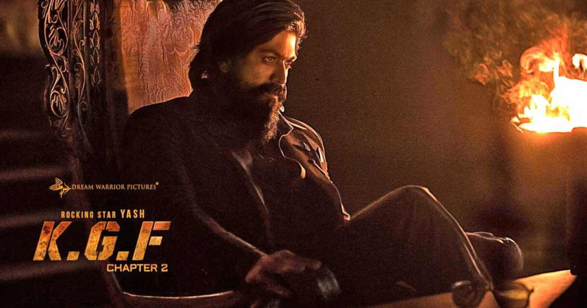
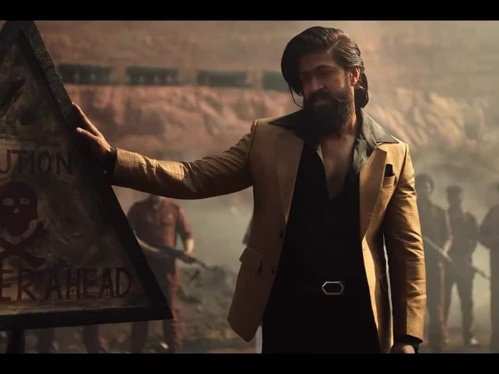
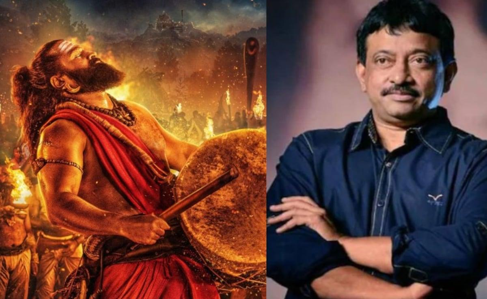
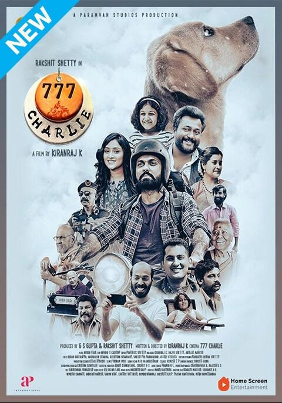
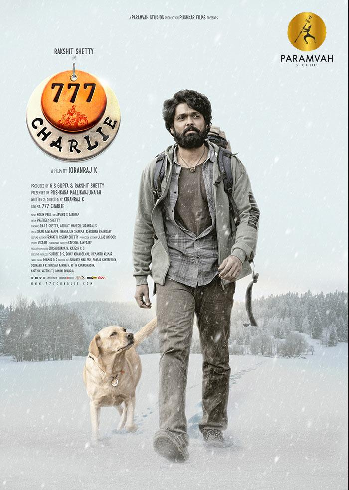

Kantara: Chapter 1 is a grand mythological action drama set during the ancient Kadamba dynasty in coastal Karnataka. The movie acts as a prequel to the original Kantara and explores the origins of the sacred traditions, divine protectors, and ancestral conflicts connected to the mystical forest of Kantara. The story begins deep inside a dense forest where tribes live in harmony with nature and worship divine spirits believed to protect the land. These forests are not shown as ordinary landscapes — they are treated as sacred spaces filled with mystery, fear, rituals, and spiritual energy. The people believe that disturbing nature invites destruction, while respecting it brings prosperity and protection. As powerful rulers and outside forces attempt to gain control over the forest lands, conflicts arise between greed, faith, power, and tradition. The movie gradually reveals how the divine legends connected to the forest were born and how ordinary humans became symbols of protection and sacrifice.


777 Charlie is an emotional adventure drama that tells the story of Dharma, a lonely and angry man who has completely disconnected himself from happiness and human relationships. He lives a dull routine life filled with frustration, silence, and emotional emptiness. His world changes unexpectedly when a playful Labrador puppy enters his life. At first, Dharma dislikes the dog and tries to avoid responsibility. However, the dog slowly becomes attached to him and eventually transforms his life completely. Dharma names her Charlie, and their bond gradually grows into a deep emotional friendship filled with joy, healing, and unconditional love. The movie beautifully shows how animals can emotionally heal people who are struggling internally. Charlie brings laughter, energy, and purpose back into Dharma’s life. The relationship between them is shown naturally, making audiences emotionally connected throughout the film.